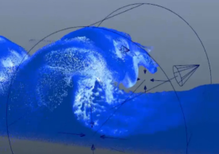

使用运动场可影响液体、泡沫和 Aero 粒子的速度。最终速度是运动场和流体模拟的最终结果。

-
选择 Bifrost 主容器或 Bifrost 形状节点。
- 选择液体形状时仅将该效果应用于液体粒子。
- 选择泡沫形状时仅将该效果应用于泡沫粒子。
- 选择液体容器时会将该效果同时应用于二者。
-
如果要使用多边形网格控制该效果，请同时将其选中。选择顺序无关紧要。
或者，您可以稍后再连接网格。
-
选择。
已添加并选择 bifrostMotionField 节点。如果选择了网格，还会添加 bifrostMeshProps 节点以控制其体素化。
-
在 bifrostMotionField 的“运动场特性”(Motion FIeld Properties)属性中，激活所需的组件，然后使用其他组中的属性调整每个组件的效果。请参见 Bifrost 运动场属性。
具体来说，若要限制为在特定体积内应用效果，可以执行下列任一操作：
- 在“边界控制”(Boundary Controls)组中，激活“启用边界”(Enable Boundary)，选择“形状”(Shape)，然后缩放、旋转和平移 bifrostMotionField 节点以定义所需的体积。视口中场的线框表示指示了将受影响的体积。
- 使用网格并确保已在“几何体”(Geometry)组中激活“启用衰减”(Enable Falloff)。
将多边形网格连接到运动场
- 选择网格和 bifrostMotionField 节点。
- 选择。
快速提示
实现效果所需的属性组合因具体情况和预期结果的不同而有很大差异。以下是有关如何开始设置各种效果的一些粗略想法。
- 一般阻尼
- 通常，若要放缓过度活跃的模拟，请使用一点“阻力”(Drag)，无需任何其他设置。
- 简单的风
- 结合使用“方向”(Direction)与“阻力”(Drag)。（可选）添加一点“湍流”(Turbulence)，或许还有一些“噪波”(Noise)。
- 混乱的翻腾
- 应用少量“噪波”(Noise)，即可从某种随机运动开始。使用“钳制速度”(Clamp Speed)保持流体翻腾：将“最大速度”(Max Speed)设置得相当高，然后为“最小速度”(Min Speed)设置动画，使其从 0.0 增加至所需的值。
- 漩涡
- 激活“启用边界”(Enable Boundary)，然后将“边界形状”(Boundary Shape)设置为“边界衰减”(Boundary Falloff)为非零的“圆柱体”(Cylinder)。确保“方向幅值”(Direction Magnitude)为 0.0 并调整“绕轴”(Around Axis)。如果速度变得过于极端，请添加一点“阻力”(Drag)。
- 雕刻波浪
- 若要创建自发形成然后断开的波浪，请以与漩涡类似的方法设置圆柱形场。将波浪旋转到一侧，使之与液体曲面的一部分相交，然后为其设置动画向前移动。添加一点“方向”(Direction)可能有助于流体克服重力向前移动，此外，添加一点为负的“远离轴”(Away From Axis)可能有助于保持液体散开。
- 断开瀑布
- 为了帮助将瀑布或类似流分解成水滴，请使用“最大深度”(Max Depth)较低的“阻力”(Drag)和“法向阻力”(Normal Drag)。对于喷射，请将泡沫添加到模拟，然后直接将具有“阻力”(Drag)和“湍流”(Turbulence)的单独场应用于泡沫。
- 跟随网格
-
若要使流体跟随网格，请连接网格并使用为负的“沿法线”(Along Normal)值，将液体拉向曲面。这有助于使用“阻力”(Drag)和/或“摩擦力”(Friction)。如果尝试让液体向上流动，这还有助于减小“重力幅值”(Gravity Magnitude)，甚至是将其设置为 0.0。
若要吸引远处的流体，您可禁用“启用衰减”(Enable Falloff)，以便跟踪网格体积。另一方面，若要使流体沿网格曲面流动并将其覆盖，请保持“启用衰减”(Enable Falloff)处于启用状态，将“最大距离”(Max Distance)调整为一个略大于所需流体厚度的值，同时还可以选择将网格设为碰撞对象。
在任一情况下，如果网格已设置动画，“继承速度”(Inherit Velocity)将非常有用。您也可以使用其他运动场帮助引导和形成流。例如，您可以使用具有隐式形状的运动场和为负的“远离轴”(Away From Axis)或“同心”(Concentric)值，将液体拉向网格。